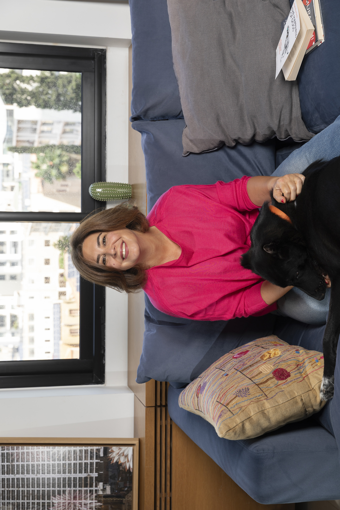

Journal
Notes from the in-between.
Reflections on creativity, place, education, and the questions that stay with us.

Latest posts Written by Rana Hanna
No posts have been published yet.
Journal
Reflections on creativity, place, education, and the questions that stay with us.

Latest posts Written by Rana Hanna
No posts have been published yet.